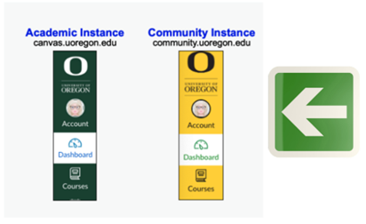

7 Undergraduate Scholars Program
7.1 Program Overview
The HEDCO Institute Undergraduate Scholars Program (UGSP) is a multidisciplinary program designed to support future generations of educators, education researchers, and outreach and communication specialists. Our program provides students with rigorous training in research synthesis, effective evidence translation, and/or fostering research-practice partnerships with the ultimate goal of increasing the use of evidence-based practices in K-12 education.
Specialty Areas
Scholars in the program gain training and experience in three specialty areas:
Research Synthesis: This specialty includes training in conducting systematic reviews, meta-analyses, and other evidence reviews and synthesis products to meet the decision-making needs of K-12 leaders. Students will gain experience with prioritizing topics for evidence reviews, conducting systematic literature reviews, collecting data for systemic reviews, conducting statistical meta-analyses, writing up results for publication in journals and presentations at conferences, and other areas of research synthesis methodology.
Knowledge Mobilization: This specialty includes training in translating evidence syntheses into digestible, easy-to-understand products that are meaningful to educators (e.g., infographics, videos, practice briefs, practice guides, toolkits). Students will gain experience with co-creating evidence translation strategies, designing translational research products, and developing dissemination plans for various K-12 education audiences (e.g., teachers, principals, superintendents, school district staff, policymakers).
Interest-holder Engagement: This specialty includes training in applying strategies to identify, engage, and inspire K-12 education interest-holders in using research to guide education practice and to engage with the HEDCO Institute. Students will gain experience with identifying relevant interest-holders, working with interest-holders to guide the work of HEDCO Institute, as well as developing tools and materials to support interest-holders’ efforts to communicate and share the work of the HEDCO Institute.
Student Benefits:
Receive a $12,000 stipend to be distributed over the course of the calendar year.
Participate in professional development, scholarship, and research activities as a part of a prestigious cohort of top scholars.
Gain applied research experience and evidence translation skills that are crucial to be an effective educational research-practice partner.
IMPORTANT: If students are receiving federal financial aid, this award may affect financial aid eligibility. Students who receive federal aid have a responsibility to report all awards earned to the UO Office of Financial Aid and Scholarships. Contact Financial Aid & Scholarships for more information.
Eligibility Criteria:
Sophomore or junior currently enrolled at the University of Oregon.
- Seniors who will graduate in December of the scholarship year or later are also eligible.
Preferred minimum 3.2 GPA*.
Interest in research synthesis, knowledge mobilization, and/or interest-holder engagement related broadly to K-12 education.
Commitment to the program for four academic terms, including 10 hours a week during the academic year and 15 hours a week in the summer.
Program Expectations:
Those selected to participate in the HEDCO Institute Undergraduate Scholars Program are expected to:
Be a sophomore or junior currently enrolled at the University of Oregon (Seniors who will graduate in December of the program cohort year or later are also eligible).
Remain in “good academic standing” according to advising.uoregon.edu/content/academic-standing throughout the year-long program.
Commit to the following schedule during the year, which includes regular meetings with your faculty mentor, participation in scheduled cohort and professional development meetings/activities, and completion of assigned trainings, activities/work, and projects:
- Winter term: 10 hours per week
- Spring term: 10 hours per week
- Summer term: 15 hours per week
- Fall term: 10 hours per week
Meetings generally occur over Zoom: Please display a professional work background for video meetings. The exceptions to the Zoom format include when HEDCO Institute faculty/staff are in Eugene for in person meetings/events and during occasional institute meetings in the HEDCO Education Building i.e., building orientation, in person meetings, etc.
Complete a final project determined by you and your mentor.
Acknowledge the HEDCO Institute Undergraduate Scholars Program in all work resulting from research during the program.
Notify the program administrator immediately of other support or of any conflicts with the eligibility and/or restrictions of this program.
Notify the program administrator of any publications or conference presentations that are associated with your work in the program.
The HEDCO Institute Undergraduate Scholars Program is a donor-funded program. In general, scholars can expect contact from the College of Education Development office for the following purposes:
To request that you fill out a biographical survey (summer) and participate in professional photos (organized by the College of Education in the early fall) for the purposes of creating a scholar bio that will be sent to donors in later fall of the program cohort year. You will also receive a copy of the professional photo for your own use.
Students will possibly be contacted for further engagement with donors and the Development team.
Mentorship:
Dr. Sean Grant is the faculty mentor for this program and will schedule regular check ins with you throughout the program. Your faculty mentor directs your specific program and is a resource for questions about the trainings and work you will complete throughout the year. They can also serve as a resource for questions related to career and/or graduate school.
Professional Development:
You will be embedded on a professional team in the role of undergraduate scholar. As a scholar, you will participate in targeted professional development activities, such as:
trainings/modules on evidence synthesis, knowledge mobilization, and interest-holder outreach and engagement;
informational interviews with HEDCO Institute faculty and staff;
professional institute activities that occur during your program; and
panel discussions on selected topics (we focus on topics of interest to scholars, and depending on these interests, the panels can involve HEDCO Institute faculty/staff and/or professionals from the University of Oregon or the field of education where/when appropriate).
University of Oregon (UO) Undergraduate Research Symposium:
The University of Oregon holds the Undergraduate Research Symposium each spring to showcase undergraduate research occurring across campus. Participation is open to HEDCO Institute scholars but is entirely voluntary. Scholars complete their program in December; those interested in presenting at the symposium on their work resulting from the program would present the following spring. Participants can present individually or as a cohort, and the presentation format is flexible. HEDCO Institute faculty/staff will support scholars interested in presenting at the symposium. Please speak with your faculty mentor if you are interested in exploring this opportunity further.
Scholar Bio
You will be asked to write a brief bio that HEDCO Institute staff can share (with your permission). Examples of who we might share your bio with: COE leadership/faculty/staff; donors; etc. Here is a basic template:
- Year in school (Example: “I am in my second year at the UO” or “I am a sophomore at the UO”)
- Major, minors
- Career aspirations
- “By participating in this program, [your first name here] hopes to…”
Note: This is different than the bio you will work on with the COE Development Office this summer and fall.
Resume Description:
You will be provided with a resume description towards the end of your program that you can include on a resume. For reference only, the resume descriptions provided to 2023 and 2024 scholars is provided below
Please do not use the example descriptions below as they are not specific to your program. They are provided as examples only.
Resume Description Example
2023 Cohort
Undergraduate Scholar, HEDCO Institute for Evidence-Based Educational Practice, College of Education, University of Oregon
January 2023-December 2023
Advisor:
Responsibilities:
Conducted a scoping review on a topic of national interest to educators: screened studies and extracted data; contributed to academic publications; contributed to the translation of research evidence into practical information; participated in outreach and marketing activities; and authored a blog post for the website (final project).
Publication Citation:
Grant, S., Trevino, S., Schweer-Collins, M., Day, E., Golfen, J., Steinka-Fry, K., & Tanner-Smith, E. (2023, November 5). Four-Day School Week at Primary and Secondary Schools in the United States. https://doi.org/10.17605/OSF.IO/KQYC6
Day, E., Golfen, J., Shimmel, L., Trevino, S., Grant., S., Steinka-Fry, K., Cabrera, B., Hamilton, S., Martinez, S., & Tanner-Smith, E. (2023). What research exists on four-day weeks in K-12 schools? HEDCO Institute for Evidence-Based Educational Practice. Retrieved from https://hedcoinstitute.uoregon.edu/reports/four-day-school-week-scoping-review
Resume Description Example
2024 Cohort
Undergraduate Scholar, HEDCO Institute for Evidence-Based Educational Practice, College of Education, University of Oregon
January 2024-December 2024
Advisor:
Responsibilities:
Scholars conducted additional coding of primary studies from a HEDCO Institute systematic review on school-based depression prevention programs; tested and used a supplementary coding tool to screen, extract and code demographic data using literature review software (DistillerSR); and contributed to the translation of research evidence into practical information for education stakeholders.
7.2 Operational Information for Incoming and Current Scholars
Mode of work:
Like our staff, scholars are welcome to work in person, remotely, or a mix of the two.
Stipend:
You will receive a $12,000 total stipend ($3K/term) over the course of the program. Here are details on the distribution of the funds:
The funds, disbursed by Financial Aid & Scholarships, are distributed towards the beginning of each term and equally over the four terms (January – December of your program year).
Important: Please contact Jen Davis at jdavis10@uoregon.edu if the disbursements do not follow the schedule above.
The award is designated as “research”. This means the funds will go directly to you rather than being applied to any student account balance first.
The funds will be disbursed however you have chosen to receive funds whether by check or direct deposit.
The question, “Will my award be taxed?” is addressed in the FAQs (Frequently Asked Questions) section of this manual.
Financial Aid & Scholarships, 541-346-3221
To set up direct deposit, log in to Duck Web > Student Menu > Direct Deposit: enter the info for “direct deposit” under “Employee Reimbursement and Student Account Refunds”. Resources for adding direct deposit: Business Affairs: Refunds and Direct Deposit and Setting up Direct Deposit in DuckWeb. Or, contact Student Billing at 541-346-3170 or stubills@uoregon.edu.
Important: If you are expecting to receive federal financial aid, this award may affect financial aid eligibility. Students who receive federal aid have a responsibility to report all awards to the UO Office of Financial Aid & Scholarships. Contact Financial Aid & Scholarships for more information.
Timeline:
The program start date is the first Monday of Winter Term in January of the cohort calendar year.
The program end date is the last Friday of Fall Term in December of the cohort calendar year.
Schedules:
Hours by Week:
- Winter Term: 10 hours per week
- Spring Term: 10 hours per week
- Summer Term: 15 hours per week
- Fall Term: 10 hours per week
Meetings: Scholars participate in the following meetings:
- To start: weekly meetings
- As year progresses: fortnightly meetings
- Each term: Attend one staff meeting per term
- Starting Spring term, there may be smaller team meetings (e.g., research team, outreach team, etc.)
- Throughout the year: regular check ins with your faculty mentor
You may find the following calendars helpful:
- UO Five-Year Calendar
- Time and Date Calendar
- UO Holiday Observance: The HEDCO Institute follows the UO Holiday Observance schedule. While our office is closed on UO holidays, scholars are still expected to complete their total required hours for that week.
Communicating with us
Email: You can expect to receive program information via email. While Canvas will be your “go to” for files, calendar, assignments/activities, etc., UO email will be used to facilitate program administration such as scheduling.
Teams: You will use Teams for quick back & forth messages, sharing kudos, and other general updates that do not need to be documented/recorded/tracked. Think of using Teams for our inter-office “messaging” or “chatting” – this is typically used for things where you need a quick reply/answer but don’t need a formal email chain.
Canvas: All files, assignments/activities/projects, key dates (calendar) are located on Canvas. There are two types of Canvas sites at the UO:
Academic Instance (which you use for classes), and
Community Instance (which are for non-CRN courses and resources)
We will be using the Community Instance of Canvas for this program (see image on the right below). The name of our Community Instance Canvas site is “HEDCO Institute Undergraduate Scholars Program”.
To log in to this site, please go to community.uoregon.edu. You will login using your Duck ID and password (similar to a Canvas course).

7.3 Frequently Asked Questions (FAQs)
1. Will my award be taxed?
The UO (University of Oregon) does not remove taxes before distributing the award to student accounts but does inform the IRS (Internal Revenue Service) of the award. The UO completes a Form 1098-T:
Qualified tuition/fees paid by the student in box 1
Total scholarships received by the student (including this award) in box 5.
The student can consult a tax accountant regarding any tax implications to be aware of as a result of receiving this award.
International students should check with Joy Germack, Senior Tax Accountant/Analyst, jgermack@uoregon.edu, 541-346-0782, on possible international tax implications.
Further questions about the Form 1098-T can be directed to Lara Grant, Student Billing, lkgrant@uoregon.edu, 541-346-1086, for more info.
https://www.irs.gov/forms-pubs/about-form-1098-t
2. Do I need to be enrolled in classes during summer term to receive the stipend?
No, you do not need to be enrolled in classes during the summer term to receive the stipend. But, please let program staff know if you will not be enrolled in summer classes as we must inform Financial Aid & Scholarships in order for the stipend to be deposited into your account.
7.4 Former Scholars
Former scholars are considered part of our team forever! Please feel free to keep in touch with us, even if it has been a while. We like to hear what you are up to, or to help where we can if you need anything. We care about your success!
Letters of Recommendation
We are happy to write reference letters and serve as references for former scholars, such as for grad school applications and job applications (assuming appropriate conduct while you are with us). Please request letters with as much advance notice as possible. When possible, we prefer at least 4 weeks of notice before a due date. If this amount of notice is not possible, please feel free to still ask us and we will do our best. Please also send us a reminder a week before each letter is due. If you are providing our contact info as a reference on a job application, please let us know when you are working on the application that somebody may be contacting us about the position.
Information that can help us write the strongest letters includes:
A brief summary of the position or program you are applying for
Any instructions related to the letter (deadline, how to submit, etc.)
Your recent CV or resume
A brief reminder (a paragraph or a bulleted list) about your accomplishments with us and dates worked with us
Anything you want us to highlight in the letter specifically. We may highlight different things for positions, so please let us know if you have anything specifically in mind that you think we should include for each application, such as skills that were listed as desirable in a job listing.
7.5 Appendices
7.5.1 Appendix A: Acronyms:
COE: College of Education
PD: Professional Development
UGSP: Undergraduate Scholars Program
While not an acronym, click here to find out what HEDCO stands for.
7.5.2 Appendix B: Definitions:
Q: What is research synthesis?
A. Research synthesis, or evidence synthesis, is a term used to describe a variety of ways that researchers can systematically summarize all of the research studies available to answer a specific question. Research synthesis is an important and exciting tool because it helps people working in a variety of fields (e.g., teachers, mental health clinicians, policymakers) make decisions based on the entire body of evidence on a given topic.
Q: What is knowledge mobilization?
A: Knowledge mobilization is a term that includes a wide range of activities used to make high-quality, research evidence about a particular topic or issue accessible to the individuals and agencies who can apply the information (e.g., school districts, teachers, decision-makers). This may involve co-producing knowledge or co-creating research products with non-researchers. Effective knowledge mobilization is crucial for reducing the research-to-practice gap by helping summarize research findings in a variety of ways and getting evidence into the hands of education interest-holders. Working collaboratively with stakeholders is a key piece to knowledge mobilization.
Q: Who are interest-holders?
A: An interest-holder is someone who has an interest in, or is affected by, a given issue or topic. For example, there are many education interest-holders. A teacher might be directly interested in how a program delivered in the classroom promotes better student mental health. A policymaker might be interested in that program because they wonder if it is worth funding. A parent might be interested because they want to know if that program will help their child. A student might be interested because they want to know if the program will help them and be enjoyable. Principals or educational leaders may be involved in decisions about programs.
Q: What is interest-holder engagement?
A: Interest-holder engagement is a term used to describe the process of identifying, motivating, and involving interest-holders in all steps towards reaching a desired goal. This may include seeking input on which research questions are most pressing to answer, as well as determining how and who to tailor dissemination products to so they can have the largest impact. By collaborating with interest-holders, we can tailor our efforts and products to best meet the needs and desires of those most affected by certain topics.
Q: How is knowledge mobilization different from interest-holder engagement?
A: Both knowledge mobilization and interest-holder engagement are key components to evidence translation. Knowledge mobilization involves working with interest-holders to figure out how to effectively communicate scientific results to various audiences. Thus, interest-holder engagement is a critical element of effective knowledge mobilization. On the other hand, interest-holder engagement involves a wide range of strategies used to communicate directly with interest-holders and guide them towards an innovative solution to their problems. Depending on the goal of the interest-holders, this may not always include knowledge mobilization.